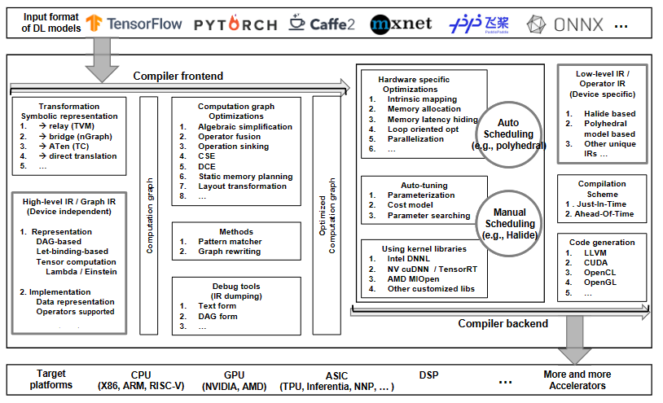

AI编译器论文阅读-00
本文最后更新于：2023年11月8日 上午
事已至此，先看论文吧
The Deep Learning Compiler: A Comprehensive Survey
2020的一篇有关AI编译器的综述，来自北航和清华
The Deep Learning Compiler: A Comprehensive Survey
Abstract
由于AI芯片的高度定制化，使得在不同硬件上部署各种深度学习模型变得十分困难，这也推动了深度学习编译器的研究。业界因此推出了一些深度学习编译器，如Tensorflow XLA和TVM。与传统编译器类似的是，深度学习编译器将不同的深度学习框架中描述的深度学习模型作为输入，然后为不同的硬件生成优化后的代码作为输出。
然而现有的文章都没有全面分析深度学习编译器独特的设计架构。本文将对现有DL编译器做全面剖析，重点在DL的多级IR及前/后端优化。
这是第一篇关于DL编译器设计体系结构的综述性论文。
1. Introduction
先讲深度学习对于各个领域的深远影响blablabla
然后说当前业界的几种主流框架，如TensorFlow、PyTorch，MXNet和CNTK等，同时提出这些框架如果需要支持新的模型，interoperability（互操作性，复用性？）会变得非常重要。为了提供复用性，我们又提出了ONNX，定义了一种DL模型的统一格式，以促进不同框架间模型的相互转换。
然后说各大公司对开发DL专用硬件的巨大投入。在可预见的未来，深度学习芯片的设计会变得越来越多样化。
要包容硬件的多样性，就必须将计算高效的映射到各种硬件上。在通用硬件上，一些专用的依赖库可以实现DL模型的高效计算，在许多专用的DL芯片上也有类似的库。但是依赖库的缺点是，库的开发和更新通常跟不上DL模型的飞速发展，无法真正有效的利用DL芯片。
为了解决DL库和其他工具的类似缺点，并减轻DL芯片上每个模型都需要手动优化的负担，DL社区开始发展DL编译器。针对不同的模型和硬件架构，DL编译器对模型定义到特定代码实现之间的转换进行的高度优化。同时还利用通用编译器如LLVM的成熟工具链，在各种硬件架构间提供更好的可移植性。与传统编译器类似，DL编译器也采用分层设计，包括前端、多级IR和后端。
本文贡献：blablabla
2. Background
2.1 深度学习框架
介绍目前流行的几种框架
2.2 深度学习硬件
当前AI芯片的粗略分类：
- 通用AI硬件：GPGPU，如Nvidia的Volta架构，辅以深度学习加速库如cuDNN，已经一些TensorRT之类的库
- 专用AI硬件：如Google TPU
- Neuromorphic Hardware：略略略
2.3 硬件相关的DL代码生成器
讲FPGA，略略略
3. COMMON DESIGN ARCHITECTURE OF DL COMPILERS

DL编译器的通用架构一般包含两部分：编译器前端和后端，中间表示IR在前后端之间，处理优化工作。其中IR都分多级，高级IR用于前端，偏向硬件无关的转换和优化；低级IR用于后端，偏向硬件相关的转换和优化、代码生成、编译等
高阶IR即图IR，用于表示硬件无关的计算和控制流，设计难点在于计算和控制流的抽象。有了这种抽象能力就可以捕获和表示各种DL模型。其目标在于建立控制流以及算子与数据之间的依赖关系，并为图级优化提供接口。此外高阶IR还需要包含编译所需的语义信息，并为自定义算子提供可扩展性。
低阶IR用于硬件相关的优化和代码生成。因此，低阶IR更注重细节，反映硬件特性，准确表示硬件相关优化。并且应该能够在后端使用成熟的第三方工具链。
前端从DL框架获取模型作为输入，然后将其转化为计算图表示形式。为了支持不同的框架，前端需要支持并实现不同格式的相互转换。计算图的优化可以分为节点级别（消除nop和零维张量）、块级别（代数简化、算子融合）、数据流级别（CSE、DCE、静态内存规划）。生成的优化计算图会传递给后端。
后端收到高阶IR（计算图）后，将高阶IR转换为LLVM IR等第三方工具链，这样就可以利用已有工具完成通用优化和代码生成。此外，后端还可以利用DL模型和硬件特性的先验知识来优化代码生成，如硬件固有映射、内存分配、内存延迟隐藏、并行化、循环优化等。为了在大的优化空间中确定最佳参数，现有的DL编译器广泛采用两种方法，Auto-Tuing（如AutoTVM）和Auto-Scheduling（如AutoScheduler）。优化后的低阶IR再经过JIT或AOT编译，生成面向不同硬件目标的机器码。
4. KEY COMPONENTS OF DL COMPILERS
4.1 高阶IR
传统编译器中采用的IR表示能力限制了DL模型中复杂计算的表达，现在的DL编译器都会采用高阶IR（称为图IR）和一些特殊设计，以求达到高效的代码优化。为了更好地理解DL编译器中使用的图IR，以下描述了图IR的表示和实现。
4.1.1 图IR的表示形式
图IR的表示方式决定了DL编译器分析图IR的方式
基于DAG的IR
DAG即有向无环图，在DL编译器中，DAG的节点表示算子，边表示张量。通用编译器一般使用DDG即数据依赖图完成如公共子表达式消除CSE和死代码消除DCE之类的优化，而借助DAG，DL编译器同样可以实现这些。
基于DAG的IR由于表达方式的简单，便于编程和编译，但由于基于DAG的IR缺少计算范围定义，因而存在诸如语义二义性这类缺陷。
基于Let-binding的IR
基于Let绑定的IR-Let绑定是一种解决语义歧义的方法，它为Javascript等许多高级编程语言使用的某些范围有限的函数提供Let表达式。当使用let关键字定义表达式时，会生成一个let节点，然后它指向表达式中的运算符和变量，而不仅仅是将变量之间的计算关系构建为DAG。在基于DAG的编译器中，当进程需要获得一个表达式的返回值时，它首先访问相应的节点并搜索相关的节点，也称为递归下降技术。相反，基于let绑定的编译器计算出let表达式中变量的所有结果，并构建变量映射。当需要特定的结果时，编译器会查找此映射来决定表达式的结果。在DL编译器中，TVM的Relay IR同时采用了基于DAG的IR和基于let绑定的IR，以获得两者的好处。
张量的计算表示
不同的图IR表示张量计算的方式也不同
- 基于函数的表示：XLA、nGraraph
- Lambda表示：TVM
- 爱因斯坦符号表示
4.1.2 图IR的实现
DL编译器中的数据通常以张量的形式进行组织，也即多维数组。编译器可以通过内存指针访问张量，或通过更灵活的占位符方式表示。占位符需要包含张量每个维度的大小，有时也可以标记成未知。此外，出于优化的原因，DL编译器需要数据布局信息，也应该可以根据占位符推断迭代器的边界。
占位符
占位符广泛应用于符号编程，如Tensorflow。占位符用于提供数据给计算图，是一种具有明确形状信息的变量。无初始值，声明只分配必要内存。有助于计算与编译器执行的分离。
未知形状表示
与Tensorflow类似，TVM使用any表示未知维度。未知形状的表示对动态模型必不可少，但是要完全支持动态模型，还要放宽边界推断和维度检查，以及额外的机制来确保内存有效性。
数据布局
张量都是放在特定数据布局和形状下。数据布局用来描述张量在内存中的组织方式，一般是一个从逻辑索引到内存索引的映射方式。合适的数据布局对性能提升非常关键，特别是对于深度学习模型之类内存密集型的应用而言。数据布局通常包括维度顺序（NCHW or NHWC）、平铺（tiling）、填充（padding）、跨距（striding）等。
TVM和GLOW将数据布局当作一种算子的参数，因为计算和优化需要这些参数信息。
边界推断
尽管DL编译器使用张量的数据表示可以很方便的描述输入和输出，但这种方式在推断迭代器边界时会有困难。边界推断通常根据计算图和已知占位符，以迭代或递归的方式执行
算子支持
算子就是计算图中的节点，通常包含代数算子（加减乘除等）、神经网络算子（卷积、池化等）、张量算子（reshape、resize等）、广播\规约算子（min、argmin等），以及控制流算子（条件和循环等），下面对三个特定的算子进行说明：
- 广播算子：。。。
- 控制流算子：任何控制流都可以通过递归和模式来实现，正因为这一点，Relay可通过函数式编程来描述复杂的深度神经网络。
- Derivative算子：略略略 看不明白
算子定制
程序员可以定制算子。
4.1.3 讨论
几乎所有的DL编译器都有其独特的高阶IR，重要的是高阶IR与硬件无关。
4.2 低阶IR
4.2.1 实现
与高阶IR相比，低阶IR用更细的粒度描述了DL模型的计算，并提供计算调优和内存访问接口，实现目标相关的优化。本节将低阶IR分为三类：基于Halide的IR，基于多面体的IR和其他IR。
基于Halide的IR
TVM将Halide IR改进为独立的符号IR，主要的两点：首先，TVM消除了对LLVM的依赖，并重构了项目模块和Halide IR设计的结构，优化了代码组织，使得图IR和前端语言（如Python）更易于理解，并且通过运行时分发机制，可以方便地添加自定义算子。如此一来，可重用性也得到了改善。 其次，TVM还简化了从字符串匹配到指针匹配的变量定义，确保每个变量都具有一个定义位置，即，静态单赋值（Static Single-Assignment, SSA）。